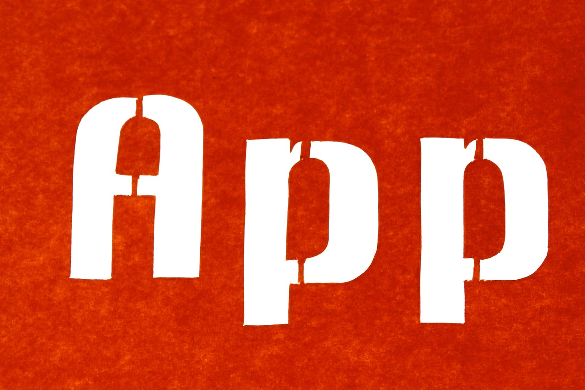

“The nice thing about standards is that there are so many of them to choose from”

The Let’s Do Digital Team have been kindly asked by a few individuals and companies to build for them different versions of healthcare apps. We are more than happy to take this on. But starting the work on these projects got me thinking, can we build a modular base that all other digital healthcare apps can use but with modular components to get the functionality needed? It has been wish of mine to build something like this for a while, with a backend for all patient data that any app could utilise. I mean, patient data is patient data right? The patient still has a blood pressure reading if they are at home, a GP practice or in hospital. The same goes for red blood cell count, breathing tests, home address, next of kin, past medical history, physical examination, mental state and so on. Even medical note taking and assessment is basically the same, no matter what clinical speciality you are in. You talk to the patient,examine them, write something down and form a plan. People seem to debate me on the patient is the patient and so is their data. These opposing opinions would say that different settings document and assess things differently, and so “in fact” patient data is not always the same.
I would argue that if you stop and try and think like a patient, think about how they want to and should interact with services when it comes to their well being and how the patient themselves interact with services across the healthcare system, they, as a patient, never change. It is only how the different systems decide to interact with the patient that changes. So why not build systems that mimic this patient reality, rather than the somewhat artificially segmented system that is the NHS and social care. The latter is a global issue by the way!
The patient is the patient and so is their data.
We could spend hours debating my thoughts on the above, and to some extent I have already done this with several colleagues and friends (and foes 😊). But let’s say that the above idea of a single point of patient truth is actually true, and replicating this single patient truth in a digital world is valid. I mean the Let’s Do Digital logo itself encompasses this idea of the real patient alongside, and aligned with, their digital self.

Anyway, enough promotion of the Let’s Do Digital community, back to the problem at hand!
So, this idea of a base healthcare app with modular components is something I would like to take forwards. I have been researching what standards it should be built on, and, like so many other areas in life, digital healthcare suffers from a similar issue. As Andrew above said, “The nice thing about standards is that there are so many of them to choose from”.
The build
So I am going to get a bit technical and geeky now. I apologise to those that find this level of detail a bore, but for the rest of you, let’s dive in!
Having done some preliminary research, and utilising my own coding in healthcare experience, I have come up with the below build:
- Django (a python framework) for the backend.
- openEHR for the data model.
- FHIR for the API.
- React (a javascript framework) for the frontend.
To give even more detail, for those super geeks out there, I would use add the following to the above:
- Docker containers for the deployment.
- NGINX for the web server.
- Guincorn for the WSGI server.
- Django REST framework for the API.
- Python hint typing.
- Typescript for the frontend.
- And all of the standards in the 12 factor app methodology, cybersecurity, data protection and more.
This work will naturally all be open source. I also want to build these modular components so that they are easier to use, even for the less experienced developer. I wish to put most of the complexities that are needed for a fast, safe, secure and user-friendly healthcare app in the base app. This will allow the developer to focus on the app’s functionality and the user experience and allow those normally shy of building healthcare apps to get involved. I would also love to build a community around this base_module (as I am calling it) app. Just look at what Arduino has done for the maker community by building in open source. I would love to do the same for the digital healthcare community.
My current dilemma
At the moment, I wonder if having both openEHR AND FHIR is overkill? Perhaps not. They are in many ways different standards for different processes. openEHR is a data model standard and talks about how you should store your data in your backend services. This is normally stored in a database (but have you considered files gitEHR)? FHIR on the other hand is an API, a process that communicates between your frontend and your backend. I would argue that you need both, but I am open to being convinced otherwise.
Please do tell
Perhaps I am crazy to take this on, and build a base/module digital healthcare app. I can only presume others have tried. Perhaps there are other things I have overlooked. Likely there are and I will find out about them as I go along. Also, perhaps a version of the above app already exists. Perhaps you feel I should consider some other standards or designs.
However you feel about what I have written about, let me know what you think. I have already discussed these ideas with close colleagues of mine, but I feel it is time to open up the discussion to a wider audience.